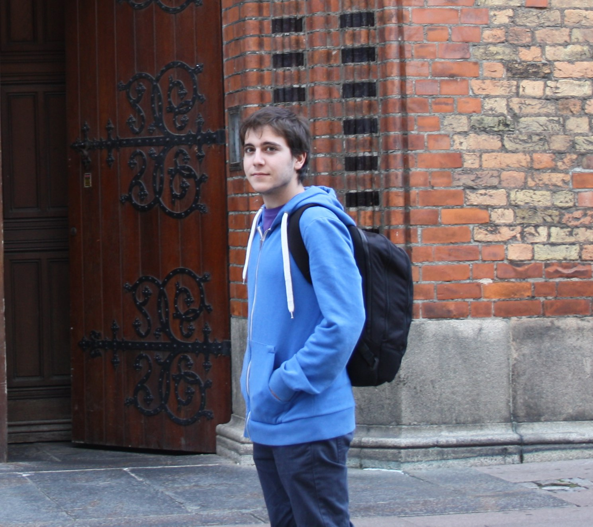

<link rel="import" href="../bower_components/polymer/polymer.html">
<link rel='import' href='./pro-i18n-behaviour.html'>
<link rel='import' href='./pro-section-header.html'>

<dom-module id="pro-profile">
  <template>
    <style>
      :host {
        display: block;
      }

      .img-container{
        align-items: center;
        display: flex;
      }
      .img{
        border-radius: 50%;
        border: solid 10px #eeeeee;
        cursor: pointer;
        display: block;
        height: auto;
        margin: 0 auto;
        transition: border-radius 400ms;
        width: 65%;
      }
      .img:hover{
        border-radius: 10%;
      }

      .text-container {
        margin-left: 5%;
        margin-right: 5%;
      }
      .text-header{
        text-align: center;
      }
      .justify{
        text-align: justify;
      }

      .dialog{
        background-color: transparent;
        box-shadow: none;
        margin: 0;
        max-width: 90%;
        overflow: hidden;
      }
      .dialog-image{
        border-radius: 25px;
        margin: 0 !important;
        max-height: 90vh;
        max-width: 100%;
        padding: 0 !important;
      }

      @media (min-width: 600px) {
        .img {
          width: 50%;
        }
      }
      @media (min-width: 800px) {
        .container{
          display: flex;
          margin: 0 5%;
        }
        .img-container{
          flex: 1;
        }
        .img {
          width: 300px;
        }
        .text-container {
          flex: 1;
        }
      }
      @media (min-width: 1050px) {
        .container{
          margin: 0 15%;
        }
      }
      @media (min-width: 1300px) {
        .container{
          margin: 0 20%;
        }
        .img {
          width: 40vh;
        }
      }
    </style>

    <pro-section-header text="{{t('pro-profile-header')}}"></pro-section-header>
    <div class="container">
      <div class="img-container">
        
      </div>
      <div class="text-container">
        <h2 class="text-header">Héctor Moreno Cervera</h2>
        <ul>
          <li>
            <p>{{t('pro-profile-about-me-1')}}</p>
          </li>
          <li>
            <p>{{t('pro-profile-about-me-2')}}</p>
          </li>
          <li class="justify">
            <p>{{t('pro-profile-about-me-3')}}</p>
          </li>
          <li class="justify">
            <p>{{t('pro-profile-about-me-4')}}</p>
          </li>
          <li class="justify">
            <p>{{t('pro-profile-about-me-5')}}</p>
          </li>
        </ul>
      </div>
    </div>
    <paper-dialog id="dialog" class="dialog" with-backdrop>
      
    </paper-dialog>

  </template>

  <script>
   (function() {
      'use strict';

      Polymer({
        is: 'pro-profile',

        behaviors: [window.MyBehaviours.proI18nBehaviour],

        created: function() {
          this.appendLocale('en', 'pro-profile-about-me-1', "I'm a 22 years old passionate web developer from Spain.");
          this.appendLocale('en', 'pro-profile-about-me-2', "In 2016 I graduated in Mathematics and Computer Science.");
          this.appendLocale('en', 'pro-profile-about-me-3', "In 2016 I started working as Front-end web developer in BABEL for BBVA using Polymer & Webcomponents.");
          this.appendLocale('en', 'pro-profile-about-me-4', "Besides web development I am also interested in videogame programming.");
          this.appendLocale('en', 'pro-profile-about-me-5', "I believe that travelling and meeting people from different cultures is one of the most fullfilling and enriching experiences.");

          this.appendLocale('es', 'pro-profile-about-me-1', "Con 22 años, soy un desarrollador web apasionado de Madrid.");
          this.appendLocale('es', 'pro-profile-about-me-2', "En 2016 me gradué en Matemáticas e Informática.");
          this.appendLocale('es', 'pro-profile-about-me-3', "En 2016 empecé a trabajar como desarrollador web Front-end en BABEL para BBVA con Polymer & Webcomponents.");
          this.appendLocale('es', 'pro-profile-about-me-4', "Además del desarrollo web, también siento interés por la programación de videojuegos.");
          this.appendLocale('es', 'pro-profile-about-me-5', "Viajar y conocer personas de diferentes culturas a mi parecer es una de las experiencias más enriquecedoras a nivel personal.");

          this.appendLocale('es', 'pro-profile-header', 'Sobre mí');
          this.appendLocale('en', 'pro-profile-header', 'About me');
        },

        openDialog: function() {
          this.$.dialog.open();
        }
      });
    })();
  </script>
</dom-module>
